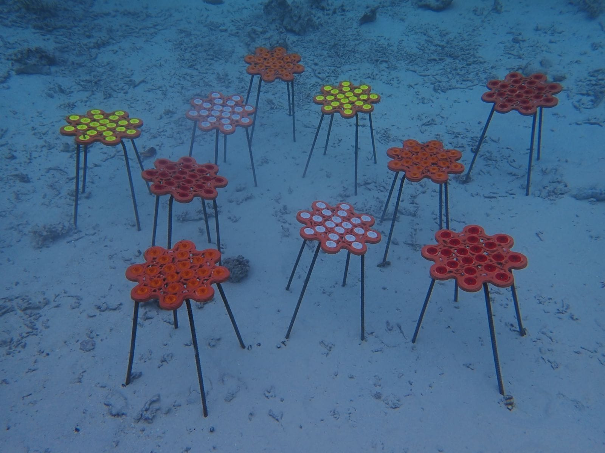
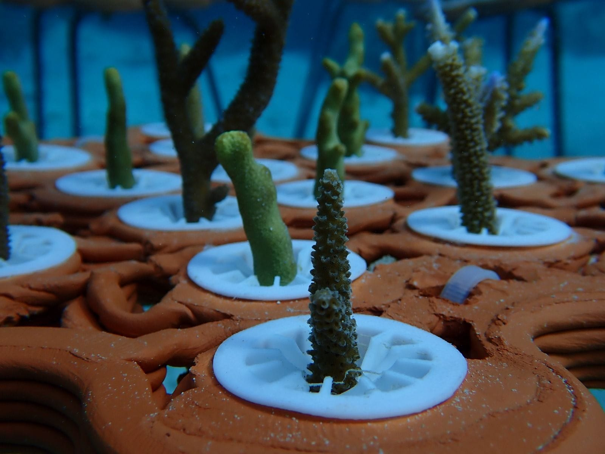
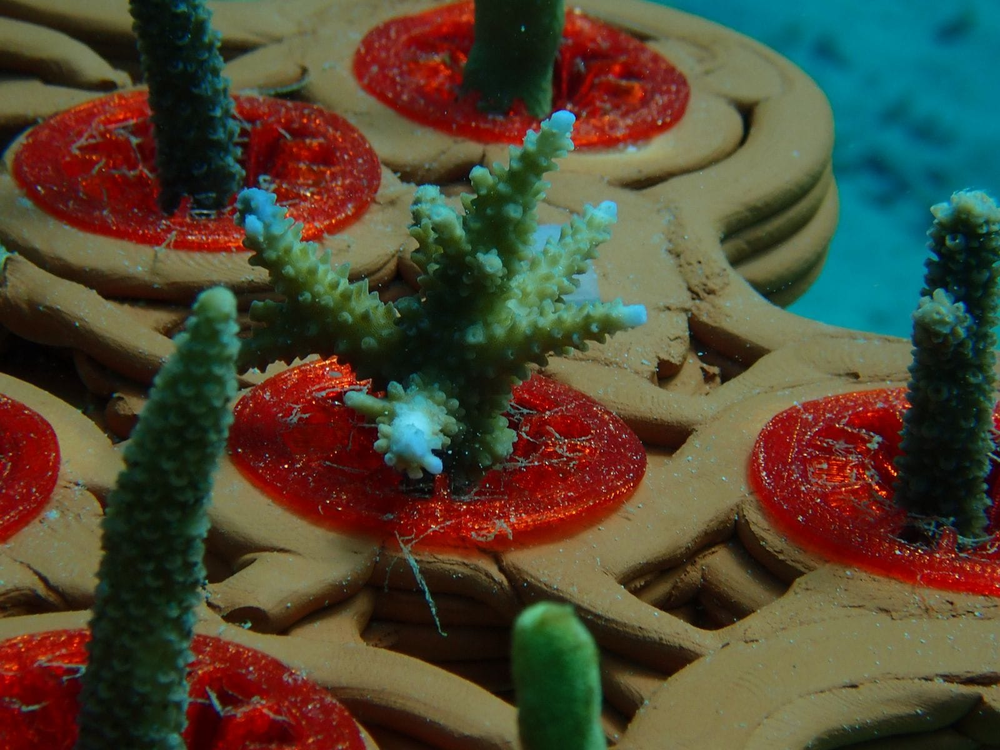
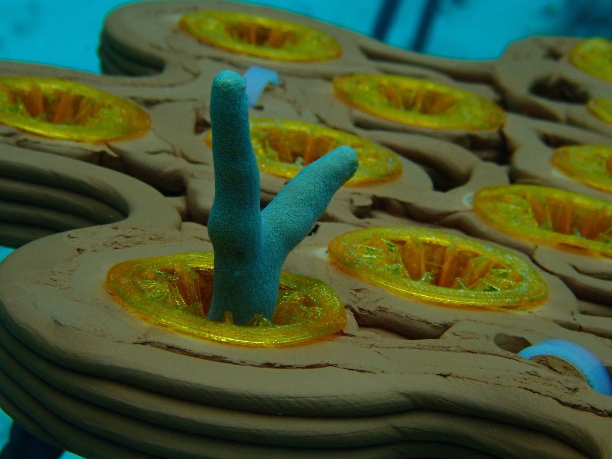
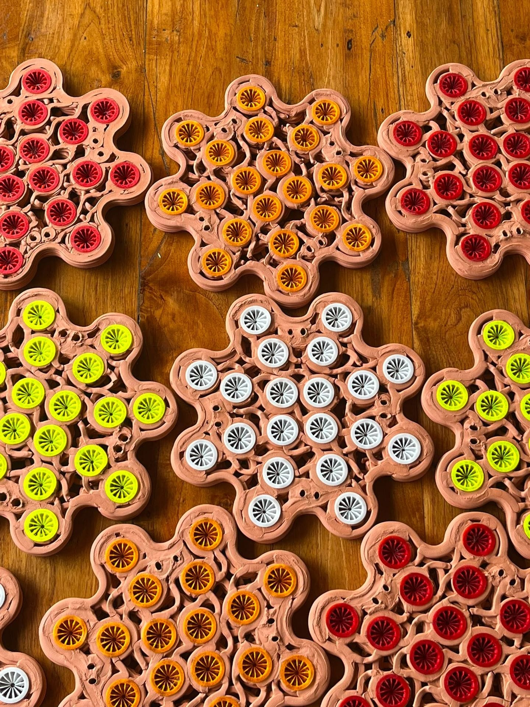

The reef units are printed in clay at the lab, fired, and fitted with small holders that grip a coral fragment. On site they are mounted on steel legs above the sand, where water moves freely around them and sediment does not bury the young corals.

Why clay
Most artificial reefs are concrete, old tyres or metal. Fired clay is closer to the chemistry and texture of a natural substrate, and printing lets every unit take a different, complex form: crevices, overhangs and pockets that reef life uses for shelter.



Made with the people who live by the reef
Alongside units printed at the Technion, the project works with the local community to produce reef units by clay extrusion and local firing. The aim is a method that the community can carry on after the researchers leave.

Read more in the Technion news story: Coral reef restoration using 3D-printed clay and participatory design.